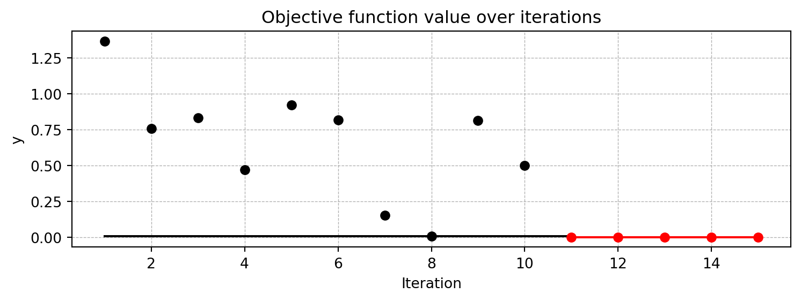
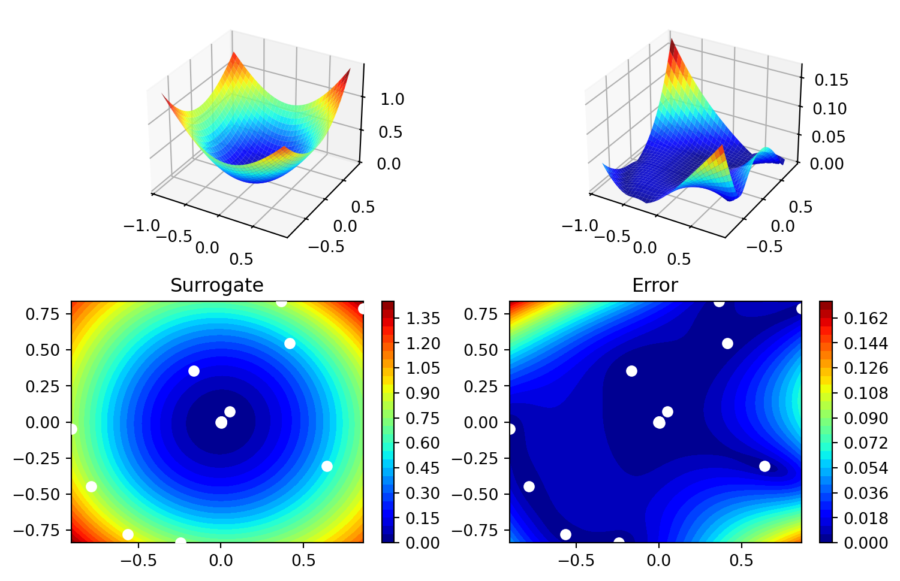
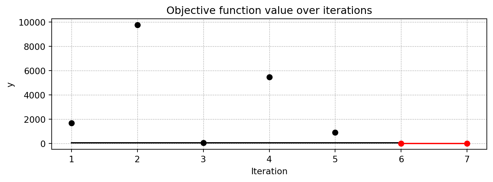
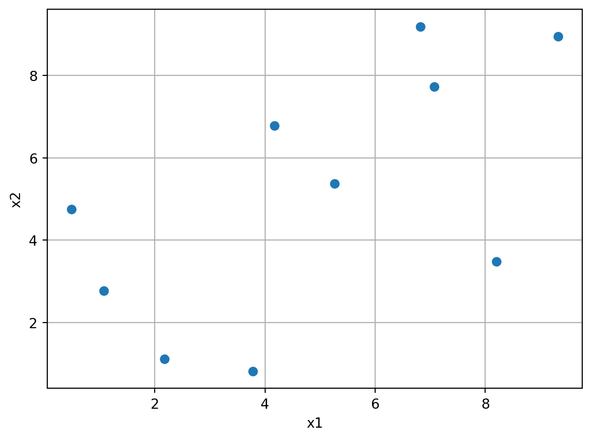
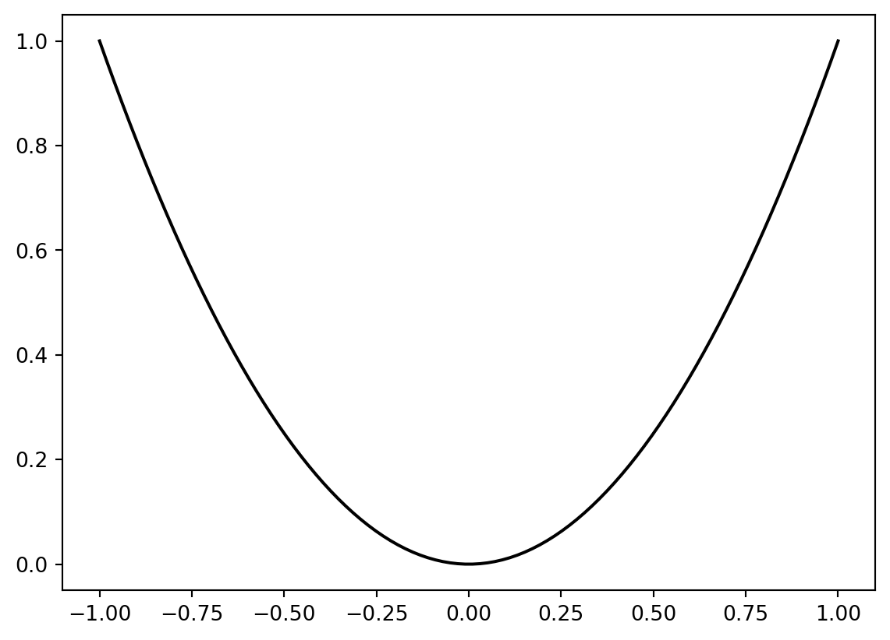
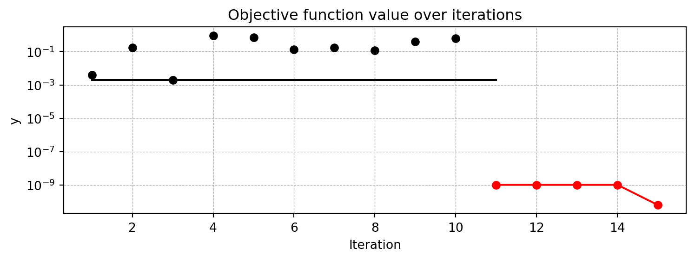
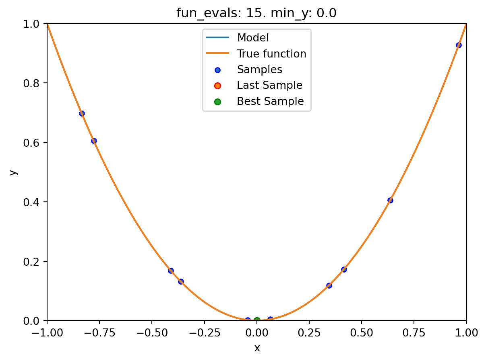
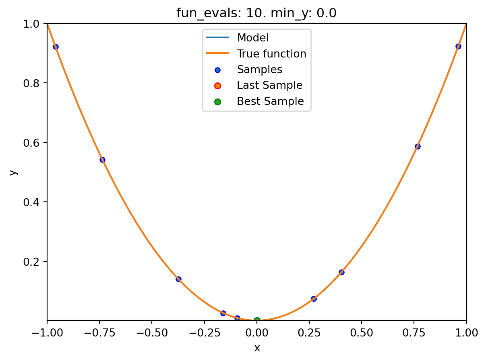
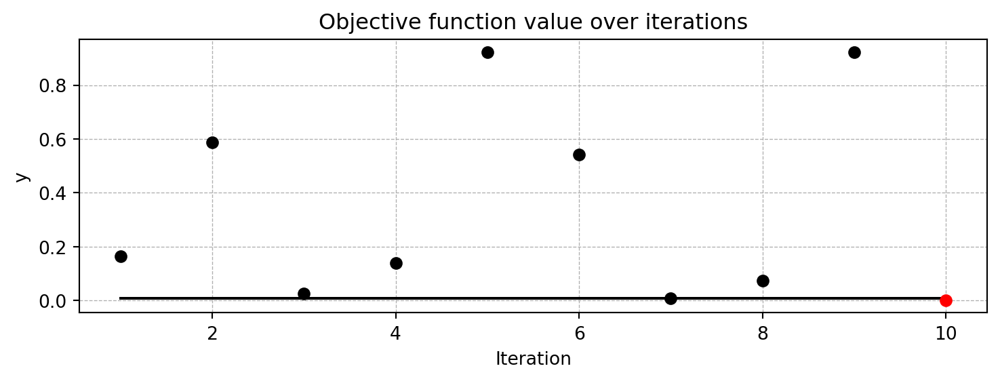

import numpy as np
from math import inf
from spotpython.fun.objectivefunctions import Analytical
from spotpython.spot import Spot
from scipy.optimize import shgo
from scipy.optimize import direct
from scipy.optimize import differential_evolution
import matplotlib.pyplot as plt11 Introduction to Sequential Parameter Optimization
This document describes the Spot features. The official spotpython documentation can be found here: https://sequential-parameter-optimization.github.io/spotpython/.
11.1 An Initial Example
The spotpython package provides several classes of objective functions. We will use an analytical objective function, i.e., a function that can be described by a (closed) formula: \[
f(x) = x^2.
\]
fun = Analytical().fun_spherex = np.linspace(-1,1,100).reshape(-1,1)
y = fun(x)
plt.figure()
plt.plot(x,y, "k")
plt.show()
from spotpython.utils.init import fun_control_init, design_control_init, surrogate_control_init, optimizer_control_init
spot_1 = Spot(fun=fun,
fun_control=fun_control_init(
lower = np.array([-10]),
upper = np.array([100]),
fun_evals = 7,
fun_repeats = 1,
max_time = inf,
noise = False,
tolerance_x = np.sqrt(np.spacing(1)),
var_type=["num"],
infill_criterion = "y",
n_points = 1,
seed=123,
log_level = 50),
design_control=design_control_init(
init_size=5,
repeats=1),
surrogate_control=surrogate_control_init(
method="interpolation",
min_theta=-4,
max_theta=3,
n_theta=1,
model_optimizer=differential_evolution,
model_fun_evals=10000))
spot_1.run()spotpython tuning: 2.0074491330357596 [#########-] 85.71%
spotpython tuning: 0.010160653451099972 [##########] 100.00% Done...
Experiment saved to 000_res.pkl<spotpython.spot.spot.Spot at 0x13e3802c0>11.2 Organization
Spot organizes the surrogate based optimization process in four steps:
- Selection of the objective function:
fun. - Selection of the initial design:
design. - Selection of the optimization algorithm:
optimizer. - Selection of the surrogate model:
surrogate.
For each of these steps, the user can specify an object:
from spotpython.fun.objectivefunctions import Analytical
fun = Analytical().fun_sphere
from spotpython.design.spacefilling import SpaceFilling
design = SpaceFilling(2)
from scipy.optimize import differential_evolution
optimizer = differential_evolution
from spotpython.surrogate.kriging import Kriging
surrogate = Kriging()For each of these steps, the user can specify a dictionary of control parameters.
fun_controldesign_controloptimizer_controlsurrogate_control
Each of these dictionaries has an initialzaion method, e.g., fun_control_init(). The initialization methods set the default values for the control parameters.
Important:
- The specification of an lower bound in
fun_controlis mandatory.
from spotpython.utils.init import fun_control_init, design_control_init, optimizer_control_init, surrogate_control_init
fun_control=fun_control_init(lower=np.array([-1, -1]),
upper=np.array([1, 1]))
design_control=design_control_init()
optimizer_control=optimizer_control_init()
surrogate_control=surrogate_control_init()11.3 The Spot Object
Based on the definition of the fun, design, optimizer, and surrogate objects, and their corresponding control parameter dictionaries, fun_control, design_control, optimizer_control, and surrogate_control, the spot object can be build as follows:
from spotpython.spot import Spot
spot_tuner = Spot(fun=fun,
fun_control=fun_control,
design_control=design_control,
optimizer_control=optimizer_control,
surrogate_control=surrogate_control)11.4 Run
spot_tuner.run()spotpython tuning: 7.295426096197904e-06 [#######---] 73.33%
spotpython tuning: 7.295426096197904e-06 [########--] 80.00%
spotpython tuning: 7.295426096197904e-06 [#########-] 86.67%
spotpython tuning: 7.295426096197904e-06 [#########-] 93.33%
spotpython tuning: 7.295426096197904e-06 [##########] 100.00% Done...
Experiment saved to 000_res.pkl<spotpython.spot.spot.Spot at 0x13e3694f0>11.5 Print the Results
spot_tuner.print_results()min y: 7.295426096197904e-06
x0: 0.0005343129105654898
x1: 0.002647628336795204[['x0', np.float64(0.0005343129105654898)],
['x1', np.float64(0.002647628336795204)]]11.6 Show the Progress
spot_tuner.plot_progress()
11.7 Visualize the Surrogate
- The plot method of the
krigingsurrogate is used. - Note: the plot uses the interval defined by the ranges of the natural variables.
spot_tuner.surrogate.plot()
11.8 Run With a Specific Start Design
To pass a specific start design, use the X_start argument of the run method.
spot_x0 = Spot(fun=fun,
fun_control=fun_control_init(
lower = np.array([-10]),
upper = np.array([100]),
fun_evals = 7,
fun_repeats = 1,
max_time = inf,
noise = False,
tolerance_x = np.sqrt(np.spacing(1)),
var_type=["num"],
infill_criterion = "y",
n_points = 1,
seed=123,
log_level = 50),
design_control=design_control_init(
init_size=5,
repeats=1),
surrogate_control=surrogate_control_init(
method="interpolation",
min_theta=-4,
max_theta=3,
n_theta=1,
model_optimizer=differential_evolution,
model_fun_evals=10000))
spot_x0.run(X_start=np.array([0.5, -0.5]))
spot_x0.plot_progress()spotpython tuning: 2.0074491330357596 [#########-] 85.71%
spotpython tuning: 0.010160653451099972 [##########] 100.00% Done...
Experiment saved to 000_res.pkl
11.9 Init: Build Initial Design
from spotpython.design.spacefilling import SpaceFilling
from spotpython.surrogate.kriging import Kriging
from spotpython.fun.objectivefunctions import Analytical
from spotpython.utils.init import fun_control_init
gen = SpaceFilling(2)
rng = np.random.RandomState(1)
lower = np.array([-5,-0])
upper = np.array([10,15])
fun = Analytical().fun_branin
fun_control = fun_control_init(sigma=0)
X = gen.scipy_lhd(10, lower=lower, upper = upper)
print(X)
y = fun(X, fun_control=fun_control)
print(y)[[ 8.97647221 13.41926847]
[ 0.66946019 1.22344228]
[ 5.23614115 13.78185824]
[ 5.6149825 11.5851384 ]
[-1.72963184 1.66516096]
[-4.26945568 7.1325531 ]
[ 1.26363761 10.17935555]
[ 2.88779942 8.05508969]
[-3.39111089 4.15213772]
[ 7.30131231 5.22275244]]
[128.95676449 31.73474356 172.89678121 126.71295908 64.34349975
70.16178611 48.71407916 31.77322887 76.91788181 30.69410529]11.10 Replicability
Seed
gen = SpaceFilling(2, seed=123)
X0 = gen.scipy_lhd(3)
gen = SpaceFilling(2, seed=345)
X1 = gen.scipy_lhd(3)
X2 = gen.scipy_lhd(3)
gen = SpaceFilling(2, seed=123)
X3 = gen.scipy_lhd(3)
X0, X1, X2, X3(array([[0.77254938, 0.31539299],
[0.59321338, 0.93854273],
[0.27469803, 0.3959685 ]]),
array([[0.78373509, 0.86811887],
[0.06692621, 0.6058029 ],
[0.41374778, 0.00525456]]),
array([[0.121357 , 0.69043832],
[0.41906219, 0.32838498],
[0.86742658, 0.52910374]]),
array([[0.77254938, 0.31539299],
[0.59321338, 0.93854273],
[0.27469803, 0.3959685 ]]))11.11 Surrogates
11.11.1 A Simple Predictor
The code below shows how to use a simple model for prediction. Assume that only two (very costly) measurements are available:
- f(0) = 0.5
- f(2) = 2.5
We are interested in the value at \(x_0 = 1\), i.e., \(f(x_0 = 1)\), but cannot run an additional, third experiment.
from sklearn import linear_model
X = np.array([[0], [2]])
y = np.array([0.5, 2.5])
S_lm = linear_model.LinearRegression()
S_lm = S_lm.fit(X, y)
X0 = np.array([[1]])
y0 = S_lm.predict(X0)
print(y0)[1.5]Central Idea: Evaluation of the surrogate model S_lm is much cheaper (or / and much faster) than running the real-world experiment \(f\).
11.12 Tensorboard Setup
11.12.1 Tensorboard Configuration
The TENSORBOARD_CLEAN argument can be set to True in the fun_control dictionary to archive the TensorBoard folder if it already exists. This is useful if you want to start a hyperparameter tuning process from scratch. If you want to continue a hyperparameter tuning process, set TENSORBOARD_CLEAN to False. Then the TensorBoard folder will not be archived and the old and new TensorBoard files will shown in the TensorBoard dashboard.
11.12.2 Starting TensorBoard
TensorBoard can be started as a background process with the following command, where ./runs is the default directory for the TensorBoard log files:
tensorboard --logdir="./runs"
TENSORBOARD_PATH
The TensorBoard path can be printed with the following command (after a fun_control object has been created):
from spotpython.utils.init import get_tensorboard_path
get_tensorboard_path(fun_control)11.13 Demo/Test: Objective Function Fails
SPOT expects np.nan values from failed objective function values. These are handled. Note: SPOT’s counter considers only successful executions of the objective function.
import numpy as np
from spotpython.fun.objectivefunctions import Analytical
from spotpython.spot import Spot
import numpy as np
from math import inf
# number of initial points:
ni = 20
# number of points
n = 30
fun = Analytical().fun_random_error
fun_control=fun_control_init(
lower = np.array([-1]),
upper= np.array([1]),
fun_evals = n,
show_progress=False)
design_control=design_control_init(init_size=ni)
spot_1 = Spot(fun=fun,
fun_control=fun_control,
design_control=design_control)
# assert value error from the run method
try:
spot_1.run()
except ValueError as e:
print(e)Experiment saved to 000_res.pkl11.14 Handling Results: Printing, Saving, and Loading
The results can be printed with the following command:
spot_tuner.print_results(print_screen=False)The tuned hyperparameters can be obtained as a dictionary with the following command:
from spotpython.hyperparameters.values import get_tuned_hyperparameters
get_tuned_hyperparameters(spot_tuner, fun_control)The results can be saved and reloaded with the following commands:
from spotpython.utils.file import save_pickle, load_pickle
from spotpython.utils.init import get_experiment_name
experiment_name = get_experiment_name("024")
SAVE_AND_LOAD = False
if SAVE_AND_LOAD == True:
save_pickle(spot_tuner, experiment_name)
spot_tuner = load_pickle(experiment_name)11.15 spotpython as a Hyperparameter Tuner
11.15.1 Modifying Hyperparameter Levels
spotpython distinguishes between different types of hyperparameters. The following types are supported:
int(integer)float(floating point number)boolean(boolean)factor(categorical)
11.15.1.1 Integer Hyperparameters
Integer hyperparameters can be modified with the set_int_hyperparameter_values() [SOURCE] function. The following code snippet shows how to modify the n_estimators hyperparameter of a random forest model:
from spotriver.hyperdict.river_hyper_dict import RiverHyperDict
from spotpython.utils.init import fun_control_init
from spotpython.hyperparameters.values import set_int_hyperparameter_values
from spotpython.utils.eda import print_exp_table
fun_control = fun_control_init(
core_model_name="forest.AMFRegressor",
hyperdict=RiverHyperDict,
)
print("Before modification:")
print_exp_table(fun_control)
set_int_hyperparameter_values(fun_control, "n_estimators", 2, 5)
print("After modification:")
print_exp_table(fun_control)Before modification:
| name | type | default | lower | upper | transform |
|-----------------|--------|-----------|---------|---------|-----------------------|
| n_estimators | int | 3 | 2 | 5 | transform_power_2_int |
| step | float | 1 | 0.1 | 10 | None |
| use_aggregation | factor | 1 | 0 | 1 | None |
Setting hyperparameter n_estimators to value [2, 5].
Variable type is int.
Core type is None.
Calling modify_hyper_parameter_bounds().
After modification:
| name | type | default | lower | upper | transform |
|-----------------|--------|-----------|---------|---------|-----------------------|
| n_estimators | int | 3 | 2 | 5 | transform_power_2_int |
| step | float | 1 | 0.1 | 10 | None |
| use_aggregation | factor | 1 | 0 | 1 | None |11.15.1.2 Float Hyperparameters
Float hyperparameters can be modified with the set_float_hyperparameter_values() [SOURCE] function. The following code snippet shows how to modify the step hyperparameter of a hyperparameter of a Mondrian Regression Tree model:
from spotriver.hyperdict.river_hyper_dict import RiverHyperDict
from spotpython.utils.init import fun_control_init
from spotpython.hyperparameters.values import set_float_hyperparameter_values
from spotpython.utils.eda import print_exp_table
fun_control = fun_control_init(
core_model_name="forest.AMFRegressor",
hyperdict=RiverHyperDict,
)
print("Before modification:")
print_exp_table(fun_control)
set_float_hyperparameter_values(fun_control, "step", 0.2, 5)
print("After modification:")
print_exp_table(fun_control)Before modification:
| name | type | default | lower | upper | transform |
|-----------------|--------|-----------|---------|---------|-----------------------|
| n_estimators | int | 3 | 2 | 5 | transform_power_2_int |
| step | float | 1 | 0.1 | 10 | None |
| use_aggregation | factor | 1 | 0 | 1 | None |
Setting hyperparameter step to value [0.2, 5].
Variable type is float.
Core type is None.
Calling modify_hyper_parameter_bounds().
After modification:
| name | type | default | lower | upper | transform |
|-----------------|--------|-----------|---------|---------|-----------------------|
| n_estimators | int | 3 | 2 | 5 | transform_power_2_int |
| step | float | 1 | 0.2 | 5 | None |
| use_aggregation | factor | 1 | 0 | 1 | None |11.15.1.3 Boolean Hyperparameters
Boolean hyperparameters can be modified with the set_boolean_hyperparameter_values() [SOURCE] function. The following code snippet shows how to modify the use_aggregation hyperparameter of a Mondrian Regression Tree model:
from spotriver.hyperdict.river_hyper_dict import RiverHyperDict
from spotpython.utils.init import fun_control_init
from spotpython.hyperparameters.values import set_boolean_hyperparameter_values
from spotpython.utils.eda import print_exp_table
fun_control = fun_control_init(
core_model_name="forest.AMFRegressor",
hyperdict=RiverHyperDict,
)
print("Before modification:")
print_exp_table(fun_control)
set_boolean_hyperparameter_values(fun_control, "use_aggregation", 0, 0)
print("After modification:")
print_exp_table(fun_control)Before modification:
| name | type | default | lower | upper | transform |
|-----------------|--------|-----------|---------|---------|-----------------------|
| n_estimators | int | 3 | 2 | 5 | transform_power_2_int |
| step | float | 1 | 0.1 | 10 | None |
| use_aggregation | factor | 1 | 0 | 1 | None |
Setting hyperparameter use_aggregation to value [0, 0].
Variable type is factor.
Core type is bool.
Calling modify_boolean_hyper_parameter_levels().
After modification:
| name | type | default | lower | upper | transform |
|-----------------|--------|-----------|---------|---------|-----------------------|
| n_estimators | int | 3 | 2 | 5 | transform_power_2_int |
| step | float | 1 | 0.1 | 10 | None |
| use_aggregation | factor | 1 | 0 | 0 | None |11.15.1.4 Factor Hyperparameters
Factor hyperparameters can be modified with the set_factor_hyperparameter_values() [SOURCE] function. The following code snippet shows how to modify the leaf_model hyperparameter of a Hoeffding Tree Regressor model:
from spotriver.hyperdict.river_hyper_dict import RiverHyperDict
from spotpython.utils.init import fun_control_init
from spotpython.hyperparameters.values import set_factor_hyperparameter_values
from spotpython.utils.eda import print_exp_table
fun_control = fun_control_init(
core_model_name="tree.HoeffdingTreeRegressor",
hyperdict=RiverHyperDict,
)
print("Before modification:")
print_exp_table(fun_control)
set_factor_hyperparameter_values(fun_control, "leaf_model", ['LinearRegression',
'Perceptron'])
print("After modification:")Before modification:
| name | type | default | lower | upper | transform |
|------------------------|--------|------------------|---------|----------|------------------------|
| grace_period | int | 200 | 10 | 1000 | None |
| max_depth | int | 20 | 2 | 20 | transform_power_2_int |
| delta | float | 1e-07 | 1e-08 | 1e-06 | None |
| tau | float | 0.05 | 0.01 | 0.1 | None |
| leaf_prediction | factor | mean | 0 | 2 | None |
| leaf_model | factor | LinearRegression | 0 | 2 | None |
| model_selector_decay | float | 0.95 | 0.9 | 0.99 | None |
| splitter | factor | EBSTSplitter | 0 | 2 | None |
| min_samples_split | int | 5 | 2 | 10 | None |
| binary_split | factor | 0 | 0 | 1 | None |
| max_size | float | 500.0 | 100 | 1000 | None |
| memory_estimate_period | int | 6 | 3 | 8 | transform_power_10_int |
| stop_mem_management | factor | 0 | 0 | 1 | None |
| remove_poor_attrs | factor | 0 | 0 | 1 | None |
| merit_preprune | factor | 1 | 0 | 1 | None |
After modification:12 Introduction to spotpython
Surrogate model based optimization methods are common approaches in simulation and optimization. SPOT was developed because there is a great need for sound statistical analysis of simulation and optimization algorithms. SPOT includes methods for tuning based on classical regression and analysis of variance techniques. It presents tree-based models such as classification and regression trees and random forests as well as Bayesian optimization (Gaussian process models, also known as Kriging). Combinations of different meta-modeling approaches are possible. SPOT comes with a sophisticated surrogate model based optimization method, that can handle discrete and continuous inputs. Furthermore, any model implemented in scikit-learn can be used out-of-the-box as a surrogate in spotpython.
SPOT implements key techniques such as exploratory fitness landscape analysis and sensitivity analysis. It can be used to understand the performance of various algorithms, while simultaneously giving insights into their algorithmic behavior.
The spot loop consists of the following steps:
- Init: Build initial design \(X\)
- Evaluate initial design on real objective \(f\): \(y = f(X)\)
- Build surrogate: \(S = S(X,y)\)
- Optimize on surrogate: \(X_0 = \text{optimize}(S)\)
- Evaluate on real objective: \(y_0 = f(X_0)\)
- Impute (Infill) new points: \(X = X \cup X_0\), \(y = y \cup y_0\).
- Goto 3.
12.1 Advantages of the spotpython approach
Neural networks and many ML algorithms are non-deterministic, so results are noisy (i.e., depend on the the initialization of the weights). Enhanced noise handling strategies, OCBA (description from HPT-book).
Optimal Computational Budget Allocation (OCBA) is a very efficient solution to solve the “general ranking and selection problem” if the objective function is noisy. It allocates function evaluations in an uneven manner to identify the best solutions and to reduce the total optimization costs. [Chen10a, Bart11b] Given a total number of optimization samples \(N\) to be allocated to \(k\) competing solutions whose performance is depicted by random variables with means \(\bar{y}_i\) (\(i=1, 2, \ldots, k\)), and finite variances \(\sigma_i^2\), respectively, as \(N \to \infty\), the can be asymptotically maximized when \[\begin{align} \frac{N_i}{N_j} & = \left( \frac{ \sigma_i / \delta_{b,i}}{\sigma_j/ \delta_{b,j}} \right)^2, i,j \in \{ 1, 2, \ldots, k\}, \text{ and } i \neq j \neq b,\\ N_b &= \sigma_b \sqrt{ \sum_{i=1, i\neq b}^k \frac{N_i^2}{\sigma_i^2} }, \end{align}\] where \(N_i\) is the number of replications allocated to solution \(i\), \(\delta_{b,i} = \bar{y}_b - \bar{y}_i\), and \(\bar{y}_b \leq \min_{i\neq b} \bar{y}_i\) Bartz-Beielstein and Friese (2011).
Surrogate-based optimization: Better than grid search and random search (Reference to HPT-book)
Visualization
Importance based on the Kriging model
Sensitivity analysis. Exploratory fitness landscape analysis. Provides XAI methods (feature importance, integrated gradients, etc.)
Uncertainty quantification
Flexible, modular meta-modeling handling. spotpython come with a Kriging model, which can be replaced by any model implemented in
scikit-learn.Enhanced metric handling, especially for categorical hyperparameters (any sklearn metric can be used). Default is..
Integration with TensorBoard: Visualization of the hyperparameter tuning process, of the training steps, the model graph. Parallel coordinates plot, scatter plot matrix, and more.
Reproducibility. Results are stored as pickle files. The results can be loaded and visualized at any time and be transferred between different machines and operating systems.
Handles scikit-learn models and pytorch models out-of-the-box. The user has to add a simple wrapper for passing the hyperparemeters to use a pytorch model in spotpython.
Compatible with Lightning.
User can add own models as plain python code.
User can add own data sets in various formats.
Flexible data handling and data preprocessing.
Many examples online (hyperparameter-tuning-cookbook).
spotpython uses a robust optimizer that can even deal with hyperparameter-settings that cause crashes of the algorithms to be tuned.
even if the optimum is not found, HPT with spotpython prevents the user from choosing bad hyperparameters in a systematic way (design of experiments).
12.2 Disadvantages of the spotpython approach
- Time consuming
- Surrogate can be misguiding
- no parallelization implement yet
12.3 Sampling in spotpython
spotpython uses a class for generating space-filling designs using Latin Hypercube Sampling (LHS) and maximin distance criteria. It is based on scipy’s LatinHypercube class. The following example demonstrates how to generate a Latin Hypercube Sampling design using spotpython. The result is shown in Figure 12.1. As can seen in the figure, a Latin hypercube sample generates \(n\) points in \([0,1)^{d}\). Each univariate marginal distribution is stratified, placing exactly one point in \([j/n, (j+1)/n)\) for \(j=0,1,...,n-1\).
import matplotlib.pyplot as plt
import numpy as np
from spotpython.design.spacefilling import SpaceFilling
lhd = SpaceFilling(k=2, seed=123)
X = lhd.scipy_lhd(n=10, repeats=1, lower=np.array([0, 0]), upper=np.array([10, 10]))
plt.scatter(X[:, 0], X[:, 1])
plt.xlabel('x1')
plt.ylabel('x2')
plt.grid()

12.4 Example: Spot and the Sphere Function
Central Idea: Evaluation of the surrogate model S is much cheaper (or / and much faster) than running the real-world experiment \(f\). We start with a small example.
import numpy as np
from math import inf
from spotpython.fun.objectivefunctions import Analytical
from spotpython.utils.init import fun_control_init, design_control_init
from spotpython.hyperparameters.values import set_control_key_value
from spotpython.spot import Spot
import matplotlib.pyplot as plt12.4.1 The Objective Function: Sphere
The spotpython package provides several classes of objective functions. We will use an analytical objective function, i.e., a function that can be described by a (closed) formula: \[
f(x) = x^2
\]
fun = Analytical().fun_sphereWe can apply the function fun to input values and plot the result:
x = np.linspace(-1,1,100).reshape(-1,1)
y = fun(x)
plt.figure()
plt.plot(x, y, "k")
plt.show()
12.4.2 The Spot Method as an Optimization Algorithm Using a Surrogate Model
We initialize the fun_control dictionary. The fun_control dictionary contains the parameters for the objective function. The fun_control dictionary is passed to the Spot method.
fun_control=fun_control_init(lower = np.array([-1]),
upper = np.array([1]))
spot_0 = Spot(fun=fun,
fun_control=fun_control)
spot_0.run()spotpython tuning: 4.74409224815101e-10 [#######---] 73.33%
spotpython tuning: 4.74409224815101e-10 [########--] 80.00%
spotpython tuning: 4.74409224815101e-10 [#########-] 86.67%
spotpython tuning: 4.74409224815101e-10 [#########-] 93.33%
spotpython tuning: 1.6645032376738785e-10 [##########] 100.00% Done...
Experiment saved to 000_res.pkl<spotpython.spot.spot.Spot at 0x14b112660>The method print_results() prints the results, i.e., the best objective function value (“min y”) and the corresponding input value (“x0”).
spot_0.print_results()min y: 1.6645032376738785e-10
x0: 1.2901562842050875e-05[['x0', np.float64(1.2901562842050875e-05)]]To plot the search progress, the method plot_progress() can be used. The parameter log_y is used to plot the objective function values on a logarithmic scale.
spot_0.plot_progress(log_y=True)

Spot method. The black elements (points and line) represent the initial design, before the surrogate is build. The red elements represent the search on the surrogate.
If the dimension of the input space is one, the method plot_model() can be used to visualize the model and the underlying objective function values.
spot_0.plot_model()

12.5 Spot Parameters: fun_evals, init_size and show_models
We will modify three parameters:
- The number of function evaluations (
fun_evals) will be set to10(instead of 15, which is the default value) in thefun_controldictionary. - The parameter
show_models, which visualizes the search process for each single iteration for 1-dim functions, in thefun_controldictionary. - The size of the initial design (
init_size) in thedesign_controldictionary.
The full list of the Spot parameters is shown in code reference on GitHub, see Spot.
fun_control=fun_control_init(lower = np.array([-1]),
upper = np.array([1]),
fun_evals = 10,
show_models = True)
design_control = design_control_init(init_size=9)
spot_1 = Spot(fun=fun,
fun_control=fun_control,
design_control=design_control)
spot_1.run()

spotpython tuning: 2.114944556417761e-09 [##########] 100.00% Done...
Experiment saved to 000_res.pkl12.6 Print the Results
spot_1.print_results()min y: 2.114944556417761e-09
x0: -4.598852635623108e-05[['x0', np.float64(-4.598852635623108e-05)]]12.7 Show the Progress
spot_1.plot_progress()
12.8 Visualizing the Optimization and Hyperparameter Tuning Process with TensorBoard
spotpython supports the visualization of the hyperparameter tuning process with TensorBoard. The following example shows how to use TensorBoard with spotpython.
First, we define an “PREFIX” to identify the hyperparameter tuning process. The PREFIX is used to create a directory for the TensorBoard files.
fun_control = fun_control_init(
PREFIX = "01",
lower = np.array([-1]),
upper = np.array([2]),
fun_evals=100,
TENSORBOARD_CLEAN=True,
tensorboard_log=True)
design_control = design_control_init(init_size=5)Moving TENSORBOARD_PATH: runs/ to TENSORBOARD_PATH_OLD: runs_OLD/runs_2025_06_28_10_43_59_0
Created spot_tensorboard_path: runs/spot_logs/01_p040025_2025-06-28_10-43-59 for SummaryWriter()Since the tensorboard_log is True, spotpython will log the optimization process in the TensorBoard files. The argument TENSORBOARD_CLEAN=True will move the TensorBoard files from the previous run to a backup folder, so that TensorBoard files from previous runs are not overwritten and a clean start in the runs folder is guaranteed.
spot_tuner = Spot(fun=fun,
fun_control=fun_control,
design_control=design_control)
spot_tuner.run()
spot_tuner.print_results()spotpython tuning: 6.428084284497196e-06 [#---------] 6.00%
spotpython tuning: 1.0020061415058982e-07 [#---------] 7.00%
spotpython tuning: 7.750062852871415e-08 [#---------] 8.00%
spotpython tuning: 3.676077540852884e-08 [#---------] 9.00%
spotpython tuning: 3.676077540852884e-08 [#---------] 10.00%
spotpython tuning: 3.676077540852884e-08 [#---------] 11.00%
spotpython tuning: 3.676077540852884e-08 [#---------] 12.00%
spotpython tuning: 3.676077540852884e-08 [#---------] 13.00%
spotpython tuning: 3.676077540852884e-08 [#---------] 14.00%
spotpython tuning: 3.676077540852884e-08 [##--------] 15.00%
spotpython tuning: 3.676077540852884e-08 [##--------] 16.00%
spotpython tuning: 3.676077540852884e-08 [##--------] 17.00%
spotpython tuning: 3.676077540852884e-08 [##--------] 18.00%
spotpython tuning: 3.676077540852884e-08 [##--------] 19.00%
spotpython tuning: 3.676077540852884e-08 [##--------] 20.00%
spotpython tuning: 3.676077540852884e-08 [##--------] 21.00%
spotpython tuning: 3.676077540852884e-08 [##--------] 22.00%
spotpython tuning: 3.676077540852884e-08 [##--------] 23.00%
spotpython tuning: 3.676077540852884e-08 [##--------] 24.00%
spotpython tuning: 3.676077540852884e-08 [##--------] 25.00%
spotpython tuning: 3.676077540852884e-08 [###-------] 26.00%
spotpython tuning: 3.676077540852884e-08 [###-------] 27.00%
spotpython tuning: 3.676077540852884e-08 [###-------] 28.00%
spotpython tuning: 3.676077540852884e-08 [###-------] 29.00%
spotpython tuning: 3.676077540852884e-08 [###-------] 30.00%
spotpython tuning: 3.676077540852884e-08 [###-------] 31.00%
spotpython tuning: 3.676077540852884e-08 [###-------] 32.00%
spotpython tuning: 3.676077540852884e-08 [###-------] 33.00%
spotpython tuning: 3.676077540852884e-08 [###-------] 34.00%
spotpython tuning: 3.676077540852884e-08 [####------] 35.00%
spotpython tuning: 3.676077540852884e-08 [####------] 36.00%
spotpython tuning: 3.676077540852884e-08 [####------] 37.00%
spotpython tuning: 3.676077540852884e-08 [####------] 38.00%
spotpython tuning: 3.676077540852884e-08 [####------] 39.00%
spotpython tuning: 3.676077540852884e-08 [####------] 40.00%
spotpython tuning: 3.676077540852884e-08 [####------] 41.00%
spotpython tuning: 3.676077540852884e-08 [####------] 42.00%
spotpython tuning: 3.676077540852884e-08 [####------] 43.00%
spotpython tuning: 3.676077540852884e-08 [####------] 44.00%
spotpython tuning: 3.676077540852884e-08 [####------] 45.00%
spotpython tuning: 3.676077540852884e-08 [#####-----] 46.00%
spotpython tuning: 3.676077540852884e-08 [#####-----] 47.00%
spotpython tuning: 3.676077540852884e-08 [#####-----] 48.00%
spotpython tuning: 3.676077540852884e-08 [#####-----] 49.00%
spotpython tuning: 3.676077540852884e-08 [#####-----] 50.00%
spotpython tuning: 3.676077540852884e-08 [#####-----] 51.00%
spotpython tuning: 3.676077540852884e-08 [#####-----] 52.00%
spotpython tuning: 3.676077540852884e-08 [#####-----] 53.00%
spotpython tuning: 3.676077540852884e-08 [#####-----] 54.00%
spotpython tuning: 3.676077540852884e-08 [######----] 55.00%
spotpython tuning: 3.676077540852884e-08 [######----] 56.00%
spotpython tuning: 3.676077540852884e-08 [######----] 57.00%
spotpython tuning: 3.676077540852884e-08 [######----] 58.00%
spotpython tuning: 3.676077540852884e-08 [######----] 59.00%
spotpython tuning: 3.676077540852884e-08 [######----] 60.00%
spotpython tuning: 3.676077540852884e-08 [######----] 61.00%
spotpython tuning: 3.676077540852884e-08 [######----] 62.00%
spotpython tuning: 3.676077540852884e-08 [######----] 63.00%
spotpython tuning: 3.676077540852884e-08 [######----] 64.00%
spotpython tuning: 3.676077540852884e-08 [######----] 65.00%
spotpython tuning: 3.676077540852884e-08 [#######---] 66.00%
spotpython tuning: 3.676077540852884e-08 [#######---] 67.00%
spotpython tuning: 3.676077540852884e-08 [#######---] 68.00%
spotpython tuning: 3.676077540852884e-08 [#######---] 69.00%
spotpython tuning: 3.676077540852884e-08 [#######---] 70.00%
spotpython tuning: 3.676077540852884e-08 [#######---] 71.00%
spotpython tuning: 3.676077540852884e-08 [#######---] 72.00%
spotpython tuning: 3.676077540852884e-08 [#######---] 73.00%
spotpython tuning: 3.676077540852884e-08 [#######---] 74.00%
spotpython tuning: 3.676077540852884e-08 [########--] 75.00%
spotpython tuning: 3.676077540852884e-08 [########--] 76.00%
spotpython tuning: 3.676077540852884e-08 [########--] 77.00%
spotpython tuning: 3.676077540852884e-08 [########--] 78.00%
spotpython tuning: 3.676077540852884e-08 [########--] 79.00%
spotpython tuning: 3.676077540852884e-08 [########--] 80.00%
spotpython tuning: 3.676077540852884e-08 [########--] 81.00%
spotpython tuning: 3.676077540852884e-08 [########--] 82.00%
spotpython tuning: 3.676077540852884e-08 [########--] 83.00%
spotpython tuning: 3.676077540852884e-08 [########--] 84.00%
spotpython tuning: 3.676077540852884e-08 [########--] 85.00%
spotpython tuning: 3.676077540852884e-08 [#########-] 86.00%
spotpython tuning: 3.676077540852884e-08 [#########-] 87.00%
spotpython tuning: 3.676077540852884e-08 [#########-] 88.00%
spotpython tuning: 3.676077540852884e-08 [#########-] 89.00%
spotpython tuning: 3.676077540852884e-08 [#########-] 90.00%
spotpython tuning: 3.676077540852884e-08 [#########-] 91.00%
spotpython tuning: 3.676077540852884e-08 [#########-] 92.00%
spotpython tuning: 3.676077540852884e-08 [#########-] 93.00%
spotpython tuning: 3.676077540852884e-08 [#########-] 94.00%
spotpython tuning: 3.676077540852884e-08 [##########] 95.00%
spotpython tuning: 3.676077540852884e-08 [##########] 96.00%
spotpython tuning: 3.676077540852884e-08 [##########] 97.00%
spotpython tuning: 3.676077540852884e-08 [##########] 98.00%
spotpython tuning: 3.676077540852884e-08 [##########] 99.00%
spotpython tuning: 3.676077540852884e-08 [##########] 100.00% Done...
Experiment saved to 01_res.pkl
min y: 3.676077540852884e-08
x0: -0.00019173099751612632[['x0', np.float64(-0.00019173099751612632)]]Now we can start TensorBoard in the background. The TensorBoard process will read the TensorBoard files and visualize the hyperparameter tuning process. From the terminal, we can start TensorBoard with the following command:
tensorboard --logdir="./runs"logdir is the directory where the TensorBoard files are stored. In our case, the TensorBoard files are stored in the directory ./runs.
TensorBoard will start a web server on port 6006. We can access the TensorBoard web server with the following URL:
http://localhost:6006/The first TensorBoard visualization shows the objective function values plotted against the wall time. The wall time is the time that has passed since the start of the hyperparameter tuning process. The five initial design points are shown in the upper left region of the plot. The line visualizes the optimization process. 
The second TensorBoard visualization shows the input values, i.e., \(x_0\), plotted against the wall time. 
The third TensorBoard plot illustrates how spotpython can be used as a microscope for the internal mechanisms of the surrogate-based optimization process. Here, one important parameter, the learning rate \(\theta\) of the Kriging surrogate is plotted against the number of optimization steps.

12.9 Jupyter Notebook
Note
- The Jupyter-Notebook of this lecture is available on GitHub in the Hyperparameter-Tuning-Cookbook Repository